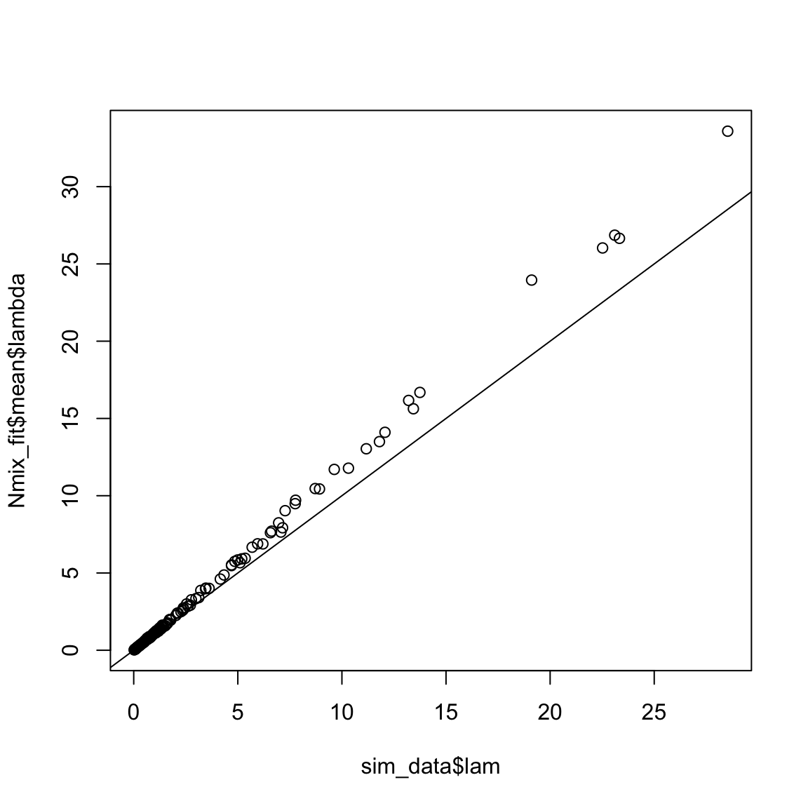

n-mixture1.RmdAs we have done throughout the semester, we will begin our exploration of N-mixture models by simulating data, writing out the JAGS model, and then fitting the model to check that it returns the data-generating values. In this lab, we will simulate and fit data for two N-mixture models: the “constant” model and a model that allows variation in \(\lambda\) and \(p\) by making them functions of site-specific covariates.
In the constant model, we assume that every site has the same expected abundance and detection probability. Start by setting the data-generating values:
Now set the number of sites and number of visits:
Next, simulate the state process, that is, the true abundance at each site:
Finally, simulate the observation process. We will first create an empty matrix to store the counts, then fill in each column using rbinom:
On your own, write the JAGS code to fit the constant N-mixture model:
Now prepare the data and fit the model:
jags_data <- list(y = y, J = J, K = K)
jags_inits <- function(){list(lambda = runif(1, 0, 10),
p = runif(1, 0, 1),
N = apply(y, 1, max))}
parameters <- c("lambda", "p", "N")
nc <- 3
ni <- 10000
nb <- 2500
nt <- 1
Nmix_fit <- jagsUI::jags(data = jags_data, inits = jags_inits,
parameters.to.save = parameters, model.file = "jags/N-mixture.jags",
n.chains = nc, n.iter = ni, n.burnin = nb, n.thin = nt, parallel = TRUE)
print(Nmix_fit)
jagsUI::traceplot(Nmix_fit)#>
#> Processing function input.......
#>
#> Done.
#>
#> Beginning parallel processing using 3 cores. Console output will be suppressed.
#>
#> Parallel processing completed.
#>
#> Calculating statistics.......
#>
#> Done.Looks good!
Next, let’s add covariates on \(\lambda\) and \(p\). To do this, we will expand the constant model using the now-familiar GLM structure:
\[\large N_j \sim Poisson(\lambda_j)\]
\[\large log(\lambda_j) = \alpha_0 + \alpha_1 X^N_j\]
\[\large y_{j,k} \sim binomial(N_j, p_{j,k})\]
\[\large logit(p_{j,k}) = \beta_0 + \beta_1 X^P_{j,k}\]
Notice that because \(\lambda\) is a site-level parameter (it varies among sites but not among occasions), we can include covariates that describe variation among sites that we think may influence abundance (e.g., habitat attributes, climate, etc.). Although the equation above contains only a single covariate, the model could be expanded to include others.
In contrast, \(p\) can vary both among sites and among occasions (it’s indexed by \(j\) and \(k\)). This means that we can include both site-level covariates (possibly including the same site-level covariates that influence \(\lambda_j\)) and occasion-level covariates (e.g., weather, observer, etc.). Again, the equation above could be expanded to include additional covariates.
When we write this model in JAGS (and any other model that includes covariates), it is often beneficial to parameterize the GLMs using a vector of coefficients rather than scalars. The data then goes in as a matrix or array and we use vectorization or matrix algebra to compute the linear predictor. In this case:
sink("jags/N-mixture2.jags")
cat("
model{
# Priors
for(i in 1:nAlpha){
alpha[i] ~ dnorm(0, 0.1)
}
for(i in 1:nBeta){
beta[i] ~ dnorm(0, 0.1)
}
# Likelihood
for(j in 1:J){
N[j] ~ dpois(lambda[j])
log(lambda[j]) <- sum(alpha * XN[j, ])
for(k in 1:K){
y[j, k] ~ dbinom(p[j, k], N[j])
logit(p[j, k]) <- sum(beta * Xp[k, , j])
}
}
} # End model
", fill = TRUE)
sink()where alpha and beta are vectors containing the intercept and slope coefficients, XN is a matrix with one row per site and one column per covariate (including a column of 1’s for the intercept), and Xp is a 3-d array with dimensions \(K \times x \times J\) (where \(x\) is the number of covariates in the detection model, including the intercept).
This parameterization has a few benefits. First, it can speed up model fitting, sometimes substaintially. Second, you can easily add or remove covariates without having to change the model code. Notice that the length of the alpha and beta vectors is determined by nAlpha and nBeta so the priors can be changed by simply changing these values in the data object. In addition, the linear predictors are vectorized so they will be updated when the dimensions of XN and Xp are changed.
To help with simulating data for this model, the WILD6900 package includes a function called sim_Nmix:
You can play with different values of \(J\) and \(K\) and change the number of covariates by adding or removing slope terms in the alpha and beta vectors.
With the data simulated, all you have to do is package the data, set the MCMC settings, and run the model. Notice that we set nAlpha and nBeta based on the dimensions of the covariate arrays so that if we change the simulation, the data list will automatically update to the correct number of parameters.
jags_data <- list(y = sim_data$y, XN = sim_data$XN, Xp = sim_data$Xp,
J = sim_data$J, K = sim_data$K,
nAlpha = dim(sim_data$XN)[2], nBeta = dim(sim_data$Xp)[2])
jags_inits <- function(){list(N = apply(jags_data$y, 1, max) + 1)}
parameters <- c("alpha", "beta", "lambda", "p", "N")
nc <- 3
ni <- 10000
nb <- 2500
nt <- 1
Nmix_fit <- jagsUI::jags(data = jags_data, inits = jags_inits,
parameters.to.save = parameters, model.file = "jags/N-mixture2.jags",
n.chains = nc, n.iter = ni, n.burnin = nb, n.thin = nt, parallel = TRUE)
print(Nmix_fit)#>
#> Processing function input.......
#>
#> Done.
#>
#> Beginning parallel processing using 3 cores. Console output will be suppressed.
#>
#> Parallel processing completed.
#>
#> Calculating statistics.......
#>
#> Done.You may need to run longer chains for this model to converge but the parameter estimates should look pretty close to the data-generating values. For example, the expected abundance at each site:

This concludes our investigation of the basic N-mixture model. On your own, play with the simulation function by changing not only the parameters in the GLM but also the number of sites \(J\) and the number of visits \(K\). How does your ability to estimate the parameters change based on the degree of spatial and temporal replication?